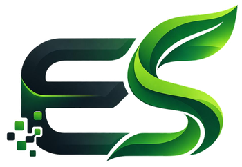

Basura y separación
Envolturas, botellas, papel y otros residuos deben depositarse y clasificarse de acuerdo con los contenedores disponibles.

EcoSys ISC 304AEcoSys es una plataforma digital que conecta educación ambiental, herramientas interactivas y participación estudiantil para aprender a separar residuos, ahorrar energía y usar la tecnología de manera responsable.
Los espacios académicos reúnen equipos, materiales y residuos que requieren hábitos de uso responsables. El diagnóstico analizará cuatro áreas para identificar oportunidades de mejora.
Envolturas, botellas, papel y otros residuos deben depositarse y clasificarse de acuerdo con los contenedores disponibles.
Los monitores, equipos, cargadores e iluminación pueden consumir recursos cuando permanecen funcionando sin necesidad.
Cables, teclados, ratones y componentes en desuso requieren acopio y gestión mediante canales autorizados.
El papel, los consumibles y el equipo tecnológico pueden utilizarse con criterios de reducción, cuidado y reutilización.
La gestión de residuos, la eficiencia energética y el manejo de dispositivos electrónicos son temas cercanos a la formación tecnológica. EcoSys los convierte en contenidos claros y actividades prácticas.
Galería de referencia: fotografías externas que ilustran los temas. No corresponden a instalaciones del ITSSAT.


Se combinan contenidos educativos y funciones digitales para acercar la sustentabilidad al día a día de estudiantes y docentes.
Conceptos claros sobre basura, residuos electrónicos, energía y consumo responsable.
Preguntas breves para conocer hábitos declarados dentro del grupo de prueba.
Acciones concretas y seguras para usar mejor los recursos tecnológicos.
Resumen visual de las respuestas guardadas en este navegador para la demostración.
Recopilación de observaciones para ajustar contenidos y funcionamiento.
Se utiliza como referencia para identificar aspectos ambientales, planificar acciones, evaluar resultados y realizar mejoras. EcoSys no está certificado ni equivale a un sistema de gestión ambiental institucional.
El prototipo combina HTML, CSS y JavaScript. Como etapa posterior se contempla publicar los contenidos en WordPress, una vez autorizado el alojamiento y el manejo de datos.
Explora recomendaciones por tema y utiliza la lista interactiva para recordar tus compromisos ambientales.
Recomendaciones sencillas para laboratorios y salones.
Las acciones sobre instalaciones eléctricas y retiro de equipos deben realizarse únicamente por personal autorizado.
Marca las acciones que ya conoces o que te comprometes a practicar. Tu lista se conserva solo en este navegador.
Este instrumento de demostración permite registrar respuestas anónimas sobre hábitos ambientales, sin recopilar nombres, matrículas ni correos electrónicos.
Se propone realizar un diagnóstico con estudiantes y docentes de Ingeniería en Sistemas Computacionales del ITSSAT para orientar los contenidos de EcoSys.
Responde cinco preguntas y comprueba qué conocimientos puedes aplicar en el laboratorio de cómputo y en tu vida cotidiana.
El resultado de este cuestionario es individual y no se incorpora a las estadísticas de la encuesta.
EcoSys busca mejorar la disponibilidad de información ambiental. Los cambios de hábitos y los efectos sobre consumo o residuos deberán comprobarse mediante mediciones posteriores.
Cuatro objetivos específicos que permiten organizar y evaluar el desarrollo del prototipo.
Observación autorizada, encuestas y análisis.
Plataforma, recursos y herramientas interactivas.
Funcionamiento, navegación y experiencia de usuario.
Retroalimentación, ajustes y documentación.
Consulta información útil, descarga recomendaciones y utiliza los resultados del diagnóstico para orientar futuras mejoras.

Acciones para aprovechar mejor la energía, disminuir el consumo innecesario y mantener hábitos responsables.
Descargar guía PDF
Recomendaciones para reconocer residuos comunes y diferenciar componentes electrónicos en desuso.
Descargar manual PDF
Aprende a elaborar encuestas, calcular indicadores y organizar mejoras sin inventar resultados.
Descargar guía PDFInformación importante sobre el alcance de EcoSys y el uso responsable de los datos.
No. Es un prototipo educativo dirigido a Ingeniería en Sistemas Computacionales. La ampliación a otras carreras dependería de los resultados, la aprobación institucional y los recursos disponibles.
No. Solo toma como referencia su enfoque de identificación de aspectos ambientales, planificación, evaluación y mejora continua.
No. Este prototipo conserva respuestas únicamente en el navegador donde se contestó. La aplicación formal del estudio requiere un mecanismo autorizado para reunir los datos y definir una muestra real.
Este prototipo utiliza HTML, CSS y JavaScript. Los contenidos pueden adaptarse posteriormente a WordPress para su publicación, tras realizar las pruebas y definir el alojamiento.
El cuidado del ambiente también se aprende en el campus. Explora el material, participa en la demostración y aporta ideas para mejorar EcoSys.